في عالم الخط العربي الرقمي، لا يكفي أن يكون الخط جميلاً؛ بل يجب أن يكون واضحاً، مرناً، سريعاً في العرض، وقادراً على الحفاظ على شخصيته في مختلف الأحجام والسياقات. من هنا يأتي خط اليمامة، وهو خط نسخ متغيّر صُمّم للإعلان واللافتات والنصوص، جامعاً بين أناقة النسخ التقليدي ومتطلبات التصميم الرقمي الحديث ......